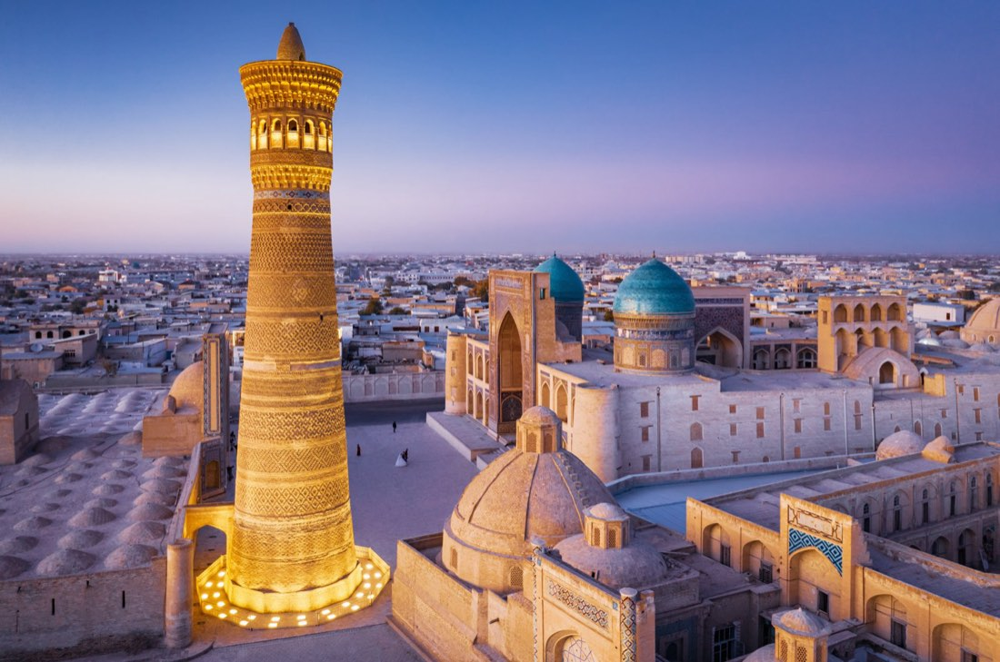

Büyük Özbekistan Turu
Tur bilgileri
- Tarih
- 01.04.2027 – 07.04.2027
- Süre
- 7 gün
- Güzergâh
- Hive, Buhara, Gücdüvan, Semerkand, Taşkent
- Otel
- Programdaki oteller veya benzeri
- Vize
- Vizesiz
- Ulaşım
- Uçak, Hızlı tren
- Havayolu
- Türk Hava Yolları
Rota haritası
Şehir etiketine dokunun; programın o günü açılsın.
Fiyatlar
| İki Kişilik Odada Kişi Başı (erken rezervasyon) | $1.400 |
|---|---|
| Tek Kişilik Oda (erken rezervasyon) | $1.650 |
| İlave Yatak (erken rezervasyon) | $1.400 |
| 0 - 1 Yaş | $250 |
|---|---|
| 2 - 6 Yaş | $1.150 |
| 7 - 11 Yaş | $1.275 |
* Erken rezervasyon fiyatıdır; erken rezervasyon koşulları için bize ulaşın.
* Fiyatlar kişi başı, USD; tüm yurt dışı yerel vergiler dahildir.
* 6 gece / 7 gün (5 gece konaklamalı).
* Ekstra tur ödemesi yoktur.
Tur programı
Buluşma
İstanbul Havalimanı Dış Hatlar Terminali Giden Yolcu Salonu "THY" bankosunda 22.30'da buluşuyoruz. Check-in ve pasaport işlemlerini müteakip uçuşumuz için hazırlanıyoruz.
1. Gün: İstanbul – Urgenç – Hive
THY'nin TK262 seferi ile 01.35'te Urgenç'e uçuyoruz (3 sa 45 dk). Varış: 07.25. (Uçuş saatleri havayoluna bağlı olarak değişebilir.) Pasaport ve gümrük işlemleri sonrası Hive'ye hareket ediyoruz (36 km). Kahvaltının ardından Hive gezimizde İçhan Kala Kompleksi, "kısa minare" anlamına gelen Kalta Minor, Şirgazi Han Medresesi, Alla Kuli Han Medresesi, Ala-Kulihan Türbesi, Cuma Camisi ve Minaresi, Abdullah Han Medresesi, Said Alauddin Türbesi, Muhammed Emin Han Medresesi, Kutluk Murad İnak Medresesi, Palvan Darvaza Kapısı ve İslam Hoca Medresesi görülecek yerler arasındadır. Akşam yemeği sonrası konaklama otelimizde. Zarafshon Boutique Hotel vb.
Önemli: Gece uçakta geçeceğinden bugün yorucu bir gündür; misafirlerimizin bu durumu göz önünde bulundurarak tura katılmaları rica olunur.
2. Gün: Hive – Buhara
Otelde alacağımız erken kahvaltının ardından hızlı tren ile Buhara'ya hareket ediyoruz. Varışta Ali Ramiteni (k.s.) ile Muhammed Baba-yı Semmasi (k.s.) türbe ve külliyelerini ziyaret ediyoruz. Akşam yemeği sonrası konaklama otelimizde. Sahid Zarafshon Hotel vb.
Önemli: Hive – Buhara arası hızlı tren ile geçilecek şekilde planlanmıştır. Hızlı trende yer olmaması veya satışa açılmaması durumunda otobüs ile geçilir. Trenle seyahatte tren sabah erken kalktığı için otelden erken çıkış yapılır.
3. Gün: Buhara
Otelde alacağımız kahvaltının ardından Hz. Emir Külal (k.s.), Hz. Şah-ı Nakşibend Muhammed Bahaüddin (k.s.) ve validelerinin türbe ve külliyelerini ziyaret ediyoruz. Ardından Buhara eski şehir gezimizde İsmail Samani Türbesi, Eyyüb Peygamber Çeşmesi ve Türbesi, Bolo Havuz Camisi, Ark Kalesi (dışarıdan), Poyi Kalon Kompleksi, Kalan Minaresi, Mir Arap Medresesi ve Lebi Havuz görülecek yerler arasındadır. Akşam yemeği sonrası konaklama otelimizde.
4. Gün: Buhara – Gücdüvan – Semerkand
Otelde alacağımız kahvaltının ardından Buhara'ya 45 km uzaklıktaki Gücdüvan Kasabası'na hareket ediyoruz. Altın Silsile'den Hz. Abdülhalık-ı Gücdüvani (k.s.), Arif-i Rivgeri (k.s.) ve Mahmud İncir-i Fağnevi (k.s.) hazretlerinin türbelerini ziyaretin ardından Semerkand'a hareket ediyoruz (230 km). Varışta İmam Buhari (k.s.) Kabri ve Külliyesi ile Emir Timur Türbesi'ni ziyaretimizi müteakip akşam yemeği sonrası konaklama otelimizde. Konstantin Plaza Hotel vb.
5. Gün: Semerkand – Taşkent
Otelde alacağımız kahvaltının ardından Semerkand turumuzda Uluğbey Rasathanesi, İmam Maturidi Türbesi, Şah-ı Zinde (Sahabe Kusem bin Abbas) Türbesi, Bulvar Caddesi, Registan Meydanı'ndaki Uluğbey, Tilla Kari ve Şirdar medreseleri ile Hz. Ubeydullah-ı Ahrar (k.s.) Türbesi'ni ziyaret ediyoruz. Ardından 18.10'da hızlı tren ile Taşkent'e hareket ediyoruz (2 sa 21 dk). Varış: 20.31. Akşam yemeği sonrası konaklama otelimizde. Al Anvar Hotel vb.
6. Gün: Taşkent
Otelde alacağımız kahvaltının ardından Taşkent gezimizde Kaffal Şaşi Türbesi, Barak Han Medresesi, Tilla Şeyh Camisi, Hz. Osman dönemine ait Kur'an-ı Kerim mushafının sergilendiği Moyi Mübarek Medresesi, Hz. İmam Camisi, Kökeldaş Medresesi, Hoca Ubeydullah Ahrar Camisi, Çarşı Pazarı, Emir Timur Meydanı, İstiklal Meydanı ve Ali Şir Nevai Tiyatrosu Meydanı görülecek yerler arasındadır. Gezimizin ardından akşam yemeği sonrası dönüş yolculuğumuz için havalimanına hareket ediyoruz.
Önemli: Uçak saatinden dolayı bu gece otel konaklaması yoktur.
7. Gün: Taşkent – İstanbul
Taşkent Havalimanı'nda check-in ve pasaport işlemlerinin ardından Türk Hava Yolları'nın TK371 seferi ile 03.30'da İstanbul'a uçuyoruz (5 sa 20 dk). Varış: 06.50. (Uçuş saatleri havayoluna bağlı olarak değişebilir.)
Fiyata dahil olanlar
- Türk Hava Yolları ile İstanbul - Urgenç / Taşkent - İstanbul gidiş-dönüş ekonomi sınıfı uçak bileti ve vergileri
- Hızlı tren ile Hive / Buhara tek yön ekonomi sınıfı tren bileti ve vergileri (satışa açık değilse otobüs ile)
- Hızlı tren ile Semerkand / Taşkent tek yön ekonomi sınıfı tren bileti ve vergileri
- 5 gece konaklama
- Sabah kahvaltıları ve akşam yemekleri
- Giriş ücretleri — Hive: İçhan Kala Kompleksi, Kalta Minor, Şirgazi Han Medresesi, Alla Kuli Han Medresesi, Ala-Kulihan Türbesi, Cuma Camisi, Abdullah Han Medresesi, Said Alauddin Türbesi, Muhammed Emin Han Medresesi, Kutluk Murad İnak Medresesi, Palvan Darvaza Kapısı ve İslam Hoca Medresesi
- Giriş ücretleri — Buhara: İsmail Samani Türbesi, Eyyüb Peygamber Çeşmesi ve Türbesi, Poyi Kalon Kompleksi ve Hz. Şah-ı Nakşibend Muhammed Bahaüddin Türbesi
- Giriş ücretleri — Semerkand: Şah-ı Zinde Türbesi, Uluğbey Rasathanesi, İmam Maturidi Türbesi, Registan Meydanı (Uluğbey, Tilla Kari ve Şirdar medreseleri) ve Ubeydullah-ı Ahrar (k.s.) Türbesi
- Giriş ücretleri — Taşkent: Moyi Mübarek Medresesi
- Programda adı geçen tüm transferler
- Türkçe rehberlik hizmeti
- Seyahat sigortası
- Tüm yurt dışı yerel vergiler
Fiyata dahil olmayanlar
- Diğer şehirlerden İstanbul'a iç hat bağlantı uçuşu ücreti
- Öğle yemekleri ve tüm yemeklerde alınan kapalı su ve kapalı içecekler
- Yurt dışı çıkış harcı
- Program dışı talep edilecek turlar
- Kişisel harcamalar, otel ekstraları (oda servisleri, telefon vb.) ve bahşişler
- Programda dahil olduğu açıkça belirtilmemiş her türlü hizmet